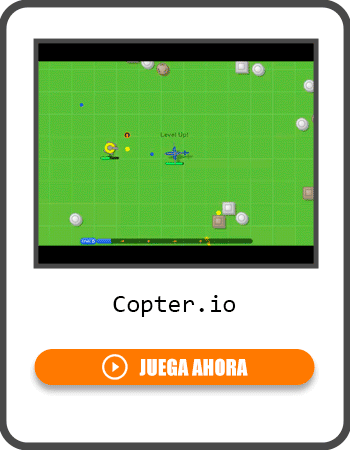
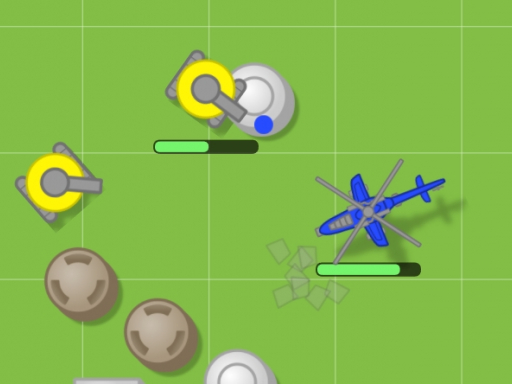
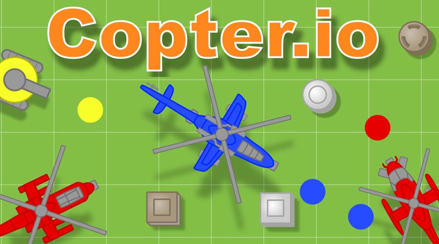

Introduction
Copter.io is a thrilling multiplayer .io game that drops you into an intense aerial battlefield as the pilot of a customizable combat helicopter. Unlike traditional flight simulators, this game combines fast-paced dogfights with deep progression mechanics. Your mission is to shoot down enemy drones, tanks, and rival players to collect experience points (XP) and dominate the leaderboard. What makes Copter.io truly unique is its robust evolution system; as you level up, you can transform your copter into specialized classes, from agile snipers to heavily armored Grenadiers. Players love it for its simple-to-learn controls but incredibly high skill ceiling, offering endless replayability through diverse upgrade paths and chaotic, free-for-all cloud warfare. Start your engines and prepare for an epic fight for sky supremacy!
Getting Started

Starting your journey in Copter.io is incredibly easy. Simply visit the official website, choose a nickname, and spawn into a massive arena filled with other players and AI-controlled shapes. The core controls are straightforward: use your mouse to aim and steer your helicopter, and click to shoot. Your helicopter will automatically fire at your crosshairs, allowing you to focus entirely on maneuvering and dodging enemy projectiles. In your first few matches, focus on survival and farming XP. Destroy the smaller, weaker AI drones and tanks scattered across the map to safely build your level. Avoid engaging high-level players early on, as a single mistake can send you back to the respawn screen. As you gain XP, you will unlock upgrade points. Spend these wisely on foundational stats like health regeneration, bullet speed, and movement velocity to ensure your copter can withstand the increasingly chaotic late-game battles. Mastering your spatial awareness and understanding your copter's turning radius are your first crucial steps to becoming a top pilot in the game.
Basic Tips
To survive your early matches in Copter.io, keep these essential tips in mind. First, always prioritize farming AI shapes over player combat when you are low-level; the drones and tanks provide safe, consistent XP without the risk of sudden death. Second, manage your upgrade points carefully by focusing on a balanced build early on; maxing out just one stat, like bullet speed, will leave you too fragile to survive incoming fire. Third, utilize the map's natural cover and obstacles to break the line of sight of aggressive players, giving your health regeneration a chance to kick in. Fourth, pay close attention to the minimap to track enemy movements and avoid getting ambushed from behind. Finally, do not be afraid to retreat when your health drops below half; staying alive is far more important than securing a single kill, as surviving longer allows you to accumulate the massive XP needed to unlock advanced copter classes and ultimately dominate the server.
Advanced Strategies

Once you master the basics, you need advanced strategies to dominate the server. First, optimize your class evolution based on your playstyle and the current server meta. If you prefer aggressive rushes, evolve into a heavily armored tank class to absorb damage while closing the distance. If you like kiting, choose a sniper or Grenadier build to deal massive burst damage from afar. Second, master the art of kiting weaker players; shoot them while continuously moving backward to stay out of their effective range, forcing them to chase you into your team's crossfire or map hazards. Third, use your special abilities strategically rather than spamming them. Save your devastating area-of-effect attacks or shield boosts for critical moments, such as when you are focused by multiple high-level enemies or when securing a kill on a fleeing target. Finally, learn the spawn patterns and XP drop mechanics of the AI shapes to create efficient farming loops that maximize your leveling speed during the early game phase.
Pro Tips

To separate yourself from good players and become a true legend, master these pro-level techniques. First, utilize strafing while shooting; moving laterally while keeping your crosshairs locked on a target makes you incredibly difficult to hit while maintaining maximum damage output. Second, exploit the game's physics by using your momentum to perform tight, unpredictable evasive maneuvers, drastically reducing your hitbox exposure during dogfights. Third, always track the XP and level of your opponents via the leaderboard; knowing exactly who is a threat allows you to preemptively dodge their specific class abilities and prioritize targets based on the XP bounty they offer in the game.
🎮 Controls & Mechanics Deep Dive
Look, anyone can point their nose at a bad guy and hold down the fire button, but mastering Copter.io requires a solid understanding of its underlying physics and control schemes. Unlike arcade shooters where you stop moving the moment you let go of the keys, your helicopter here has momentum and drift. If you're playing on PC, your mouse controls your pitch and yaw, while the WASD keys handle your throttle and lateral movement. Finding the right mouse sensitivity is crucial; too high, and you'll oversteer into a mountain, too low, and you'll never win a dogfight.
Let's talk hitboxes, because they can make or break your survival. Your main rotor is the largest hitbox, but the tail boom is actually a critical weak spot. If an enemy clips your tail, you'll experience a severe spin-out that lasts for a couple of seconds. In a high-level match, that's a death sentence. Conversely, your own hitbox shrinks slightly when you execute a tight barrel roll, which can sometimes cause incoming missiles to miss entirely.
Scoring in Copter.io isn't just about getting the final blow. The game uses a damage-based XP system with a streak multiplier. If you chip away at a high-level player's health and your teammate finishes them off, you still get a massive XP payout. However, if you die, you respawn with a brief invulnerability frame (i-frames), but you'll drop back down to your base level or spawn at a designated safe zone, depending on the server settings. Managing your aggression and knowing when to disengage is just as important as knowing how to fly.
🎯 Game Modes Breakdown
Copter.io offers a few distinct ways to play, each requiring a completely different mindset. Here is a breakdown of what you'll face when you drop into the skies:
- Free-For-All (FFA): This is the classic, chaotic experience. Up to 30 players drop into a massive map with no alliances. The objective is simple: survive and get the highest score. Strategy: Play it safe in the early game. Farm the AI drones and tanks to build your level, then start picking off distracted players in the late game.
- Team Deathmatch: You're split into Red and Blue squads. Communication and target prioritization are everything here. Strategy: Don't fly solo. Stick with at least one wingman, focus fire on the biggest threat, and use your heavier, tankier copters to draw aggro while your faster, glass-cannon teammates flank.
- Battle Royale: A toxic, shrinking storm zone forces players into an ever-decreasing combat area. Strategy: Positioning is key. Don't get caught running through the middle of the storm while under fire. Hug the edge of the safe zone and use the terrain to mask your approach as the circle closes in.
- Sandbox / Practice: No enemies, no stress. This mode is purely for you to test out your newly unlocked copters. Strategy: Use this to learn the exact turning radius and acceleration quirks of your new ride before taking it into a ranked FFA match.
🚀 Advanced Strategies & Pro Tips
Once you've got the basics down, it's time to separate yourself from the casuals. These are the high-level tactics that will help you dominate the leaderboards.
The Feint and Drop: This is the ultimate evasion maneuver. When you see a missile lock onto you, don't just fly in a straight line. Fly upward to draw their crosshair up, then abruptly cut your throttle and drop like a stone. The missile's tracking algorithm will overshoot, giving you a clean window to pull up and return fire.
Terrain Masking: Missiles are deadly, but they need line-of-sight. If you're being chased by a higher-level player, dive into the canyons or weave through the skyscrapers. Breaking their line-of-sight for even a second will cause their missiles to detonate harmlessly against the environment. Use the map's geometry as your best shield.
Ammo Management and Chip Damage: Rookie players spam their missiles the second they see an enemy. Pros use their machine guns to deal chip damage and force the enemy to maneuver defensively. Save your missiles for the finishing blow, or use them to interrupt an enemy who is trying to heal or reload. If you run out of missiles early, you're basically a sitting duck against armored targets.
Psychological Baiting: If you're in a lower-tier copter and get jumped by a boss-level player, play dead. Fly erratically, drop your altitude, and pretend you're panicking. Most aggressive players will overcommit to the chase, flying low and fast to secure the kill. Once they're locked into their dive, snap your copter around and unleash everything you have. They won't have the time to adjust their flight path.
❓ Frequently Asked Questions
Is Copter.io completely free to play?
Yes, the game is 100% free to play directly in your web browser. There are optional microtransactions for cosmetic skins and rotor trails, but nothing that gives you a pay-to-win advantage in combat.
Can I play Copter.io on my phone or tablet?
Absolutely. Since it's a browser-based .io game, it runs on mobile devices. However, the touch controls can be a bit clunky for intense dogfights. If you're serious about climbing the ranks, we highly recommend playing on a PC with a mouse and keyboard.
How do I play with my friends?
You can create a private lobby and share the unique room code with your friends. Just make sure everyone selects the same region server to avoid lag and connection issues during your squad sessions.
What are the minimum system requirements?
Because it's an HTML5 browser game, the requirements are incredibly low. Any modern device with an updated browser (Chrome, Firefox, Edge, Safari) and a decent internet connection will run it smoothly. Just make sure to close out of heavy background tabs to keep your frame rate high.
How can I level up my helicopter faster?
Focus on surviving longer rather than rushing into fights. The game rewards time alive and continuous damage. Also, try to finish off high-level AI tanks, as they grant significantly more XP than standard drones. If the server has active XP boosters, make sure to grab them!
Conclusion
Copter.io offers an exhilarating blend of fast-paced aerial combat and deep progression that keeps you coming back for more. Whether you are farming AI drones to level up or engaging in intense dogfights for the top leaderboard spot, every match is a new challenge. Jump into the pilot's seat, master your upgrades, and claim your rightful place as the undisputed king of the sky!